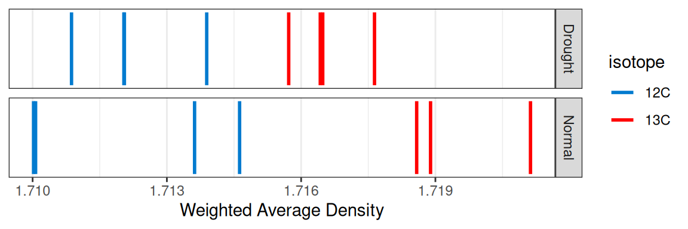
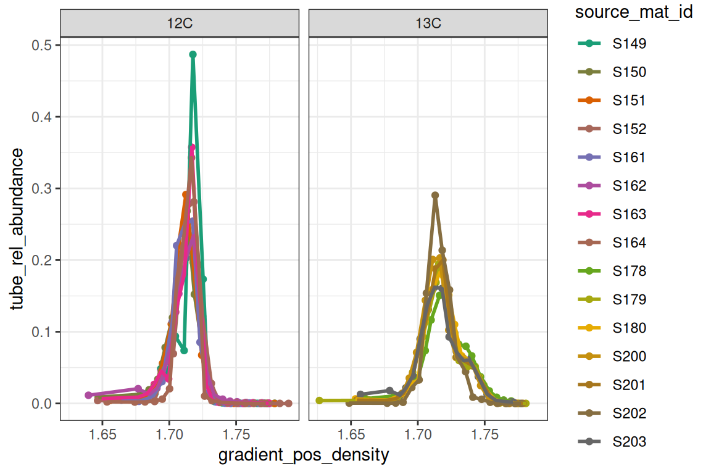
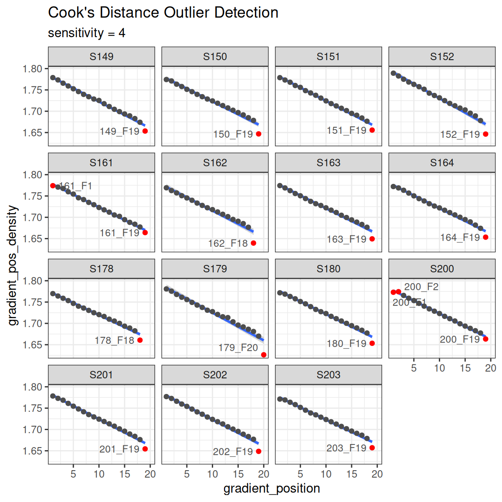
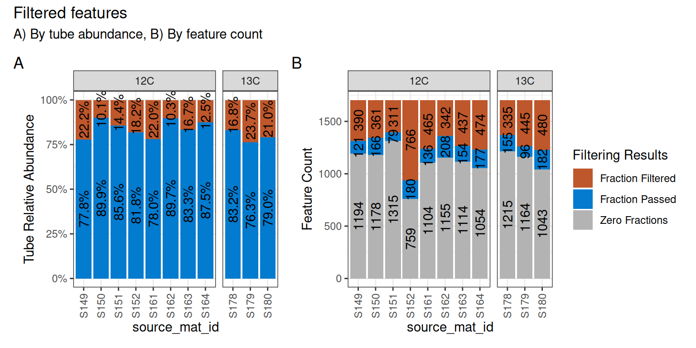
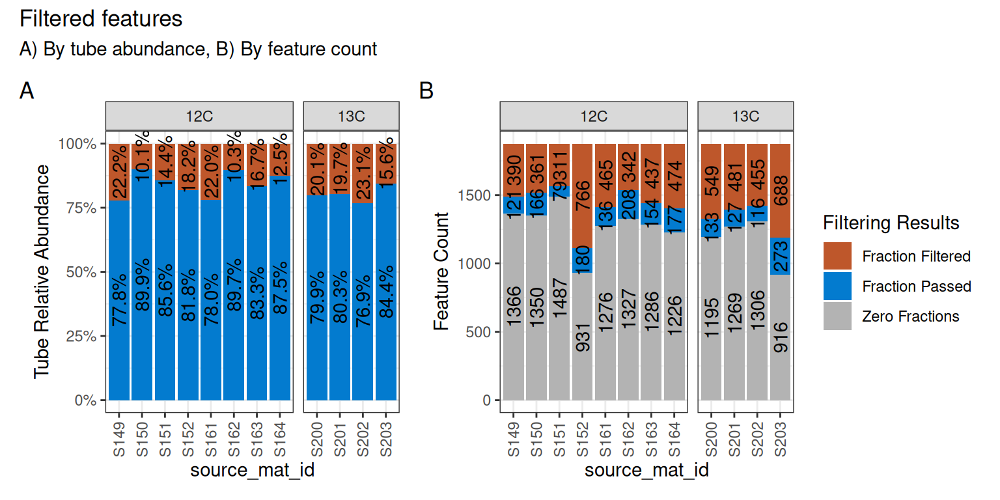
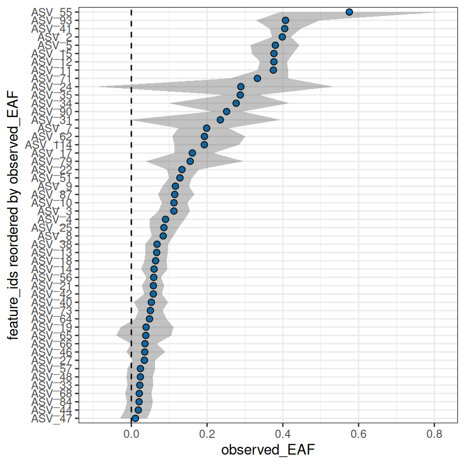
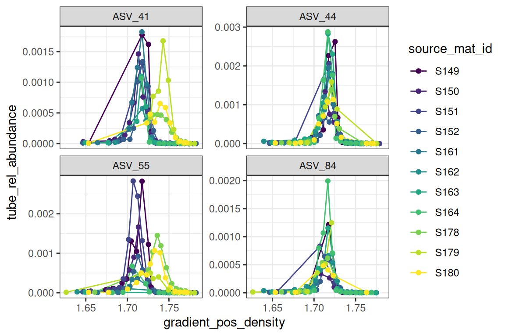
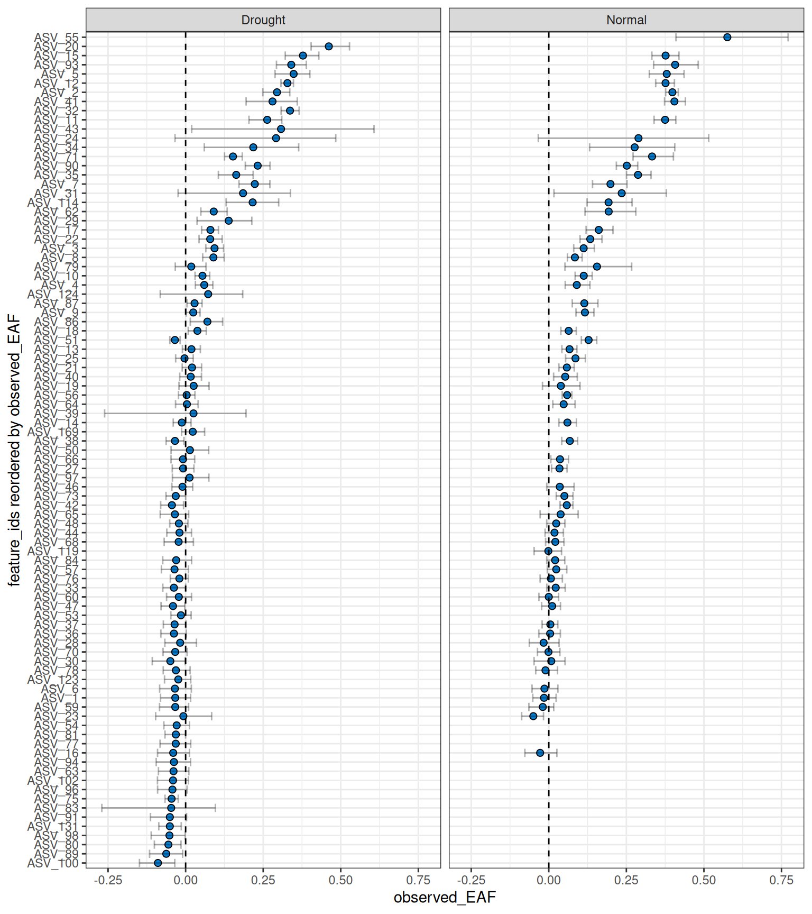

Background
A complete quantitative stable isotope probing (qSIP) workflow using the qSIP2 package starts with three input files and ends with calculated excess atom fraction (EAF) values along with a ton of intermediate data. This vignette will be a high-level walk through of the major steps with links to more specific vignettes where more detail is appropriate.
The input files
Preparing and formatting the input files is often the most tedious part of any analysis. Our goal with the rigid (and opinionated) requirements imposed by qSIP2 will hopefully streamline the creation of these files, and automated validation checks can remove many of the common sources of error or confusion. Where appropriate, qSIP2 and this documentation uses MISIP terminology1.
Source data
The source data is the highest level of metadata with a row corresponding to each original experimental or source material object. An example source dataframe is included in the qSIP2 package called example_source_df.
example_source_df
| source | total_copies_per_g | total_dna | Isotope | Moisture | isotopolog |
|---|---|---|---|---|---|
| S149 | 34838665 | 74.46539 | 12C | Normal | glucose |
| S150 | 53528072 | 109.01522 | 12C | Normal | glucose |
| S151 | 95774992 | 182.16852 | 12C | Normal | glucose |
| S152 | 9126192 | 23.68963 | 12C | Normal | glucose |
| S161 | 41744046 | 67.62552 | 12C | Drought | glucose |
| S162 | 49402713 | 94.21217 | 12C | Drought | glucose |
There are a few required columns for valid source data including a unique ID (source_mat_id), an isotope and isotopolog designation for the substrate that had the label. Additional columns can be added as necessary (e.g. Moisture) for grouping and filtering later in the process.
For growth calculations there are three additional requirements: timepoint, total_abundance and volume. These are not necessary for the standard EAF workflow and will instead be addressed in the growth vignette.
Once the dataframe is ready, the next step is to convert it to a qsip_source_data object. This is one of the main qSIP2 objects to hold and validate the data. Each of the required columns of metadata is assigned to a column in your dataframe. For example, below the “Isotope” column in the dataframe is assigned to the isotope parameter in the qsip_source_data object.
source_object <- qsip_source_data(example_source_df,
isotope = "Isotope",
isotopolog = "isotopolog",
source_mat_id = "source"
)
class(source_object)
#> [1] "qSIP2::qsip_source_data" "S7_object"This object modifies some of the column names to standard names as supplied in the above function.
| Original Headers | Modified Headers |
|---|---|
| source | source_mat_id |
| total_copies_per_g | total_copies_per_g |
| total_dna | total_dna |
| Isotope | isotope |
| Moisture | Moisture |
| isotopolog | isotopolog |
If the column names in the dataframe already match the expected standard names, then you can skip assigning them and they should be identified correctly.
A dataframe with the original headers can be recovered using the get_dataframe() method with the original_headers = T option.
df <- get_dataframe(source_object, original_headers = TRUE)| Isotope | isotopolog | source | total_copies_per_g | total_dna | Moisture |
|---|---|---|---|---|---|
| 12C | glucose | S149 | 34838665 | 74.46539 | Normal |
| 12C | glucose | S150 | 53528072 | 109.01522 | Normal |
| 12C | glucose | S151 | 95774992 | 182.16852 | Normal |
| 12C | glucose | S152 | 9126192 | 23.68963 | Normal |
| 12C | glucose | S161 | 41744046 | 67.62552 | Drought |
| 12C | glucose | S162 | 49402713 | 94.21217 | Drought |
See the source data vignette for more details.
Sample data
The sample metadata is the next level of detail with one row for each fraction, or one row for each set of fastq files that were sequenced. If you have “bulk” or unfractionated sequenced reads, these are also considered samples. Basically, anything that lives as columns in your ASV/feature table are considered samples.
example_sample_df
| sample | source | Fraction | density_g_ml | dna_conc | avg_16S_g_soil |
|---|---|---|---|---|---|
| 149_F1 | S149 | 1 | 1.778855 | 0.0000000 | 4473.7081 |
| 149_F2 | S149 | 2 | 1.773391 | 0.0000000 | 986.6581 |
| 149_F3 | S149 | 3 | 1.765742 | 0.0000000 | 4002.7026 |
| 149_F4 | S149 | 4 | 1.759185 | 0.0000000 | 3959.7283 |
| 149_F5 | S149 | 5 | 1.752629 | 0.0012413 | 5725.7319 |
| 149_F6 | S149 | 6 | 1.746072 | 0.0128156 | 7566.2722 |
Again, there are several necessary columns for valid sample data, including a unique sample ID (sample_id), the source they came from (source_mat_id), the fraction ID (gradient_position), the fraction density (gradient_pos_density) and a measure of abundance (total DNA or qPCR copy number) in that fraction (gradient_pos_amt).
An additional column that can be derived is the percent abundance of your total sample that is found in each of the fractions. The add_gradient_pos_rel_amt() function can help calculate that by dividing each fraction abundance by the total abundance for each source and putting it in a gradient_pos_rel_amt column.
But there is no need to do this if you already have the relative amounts calculated in your dataframe.
sample_df <- example_sample_df |>
add_gradient_pos_rel_amt(source_mat_id = "source", amt = "avg_16S_g_soil")gradient_pos_rel_amt column added
| sample | source | Fraction | density_g_ml | dna_conc | avg_16S_g_soil | gradient_pos_rel_amt |
|---|---|---|---|---|---|---|
| 149_F1 | S149 | 1 | 1.778855 | 0.0000000 | 4473.7081 | 0.0001284 |
| 149_F2 | S149 | 2 | 1.773391 | 0.0000000 | 986.6581 | 0.0000283 |
| 149_F3 | S149 | 3 | 1.765742 | 0.0000000 | 4002.7026 | 0.0001149 |
| 149_F4 | S149 | 4 | 1.759185 | 0.0000000 | 3959.7283 | 0.0001137 |
| 149_F5 | S149 | 5 | 1.752629 | 0.0012413 | 5725.7319 | 0.0001643 |
| 149_F6 | S149 | 6 | 1.746072 | 0.0128156 | 7566.2722 | 0.0002172 |
Again, we make a qSIP2 object for this data, this time as a qsip_sample_data object. The columns in the dataframe are assigned to the appropriate parameters, and any column names exactly matching the parameter name will automatically be identified. Similar to the source_data above, the names in the sample_data object will be modified from the original names to the standardized names.
sample_object <- qsip_sample_data(sample_df,
sample_id = "sample",
source_mat_id = "source",
gradient_position = "Fraction",
gradient_pos_density = "density_g_ml",
gradient_pos_amt = "avg_16S_g_soil",
gradient_pos_rel_amt = "gradient_pos_rel_amt"
)
class(sample_object)
#> [1] "qSIP2::qsip_sample_data" "S7_object"See the sample data vignette for more information including the built-in validations.
Feature data
Finally, the last of the three necessary input files is a feature abundance table, aka “OTU table” or “ASV table”. The format of this dataframe has the unique feature IDs in the first column, and an additional column for each sample. Each row then contains the whole number (non-normalized) counts of each feature in each sample. If your features are MAGs, then you may instead of coverages or some other pre-normalized value in your feature table instead of sequence counts.
For now, the validation step defaults to requiring all values be counts (positive integers), but other type options include coverage (for working with MAGs or metagenomes), relative if you already have relative abundances and normalized if you have spike-ins or another method that determines the correct abundance in each sample.
example_feature_df
| ASV | 149_F1 | 149_F2 | 149_F3 | 149_F4 | 149_F5 |
|---|---|---|---|---|---|
| ASV_1 | 1245 | 376 | 582 | 1258 | 692 |
| ASV_2 | 1471 | 569 | 830 | 1373 | 737 |
| ASV_3 | 342 | 152 | 211 | 389 | 218 |
| ASV_4 | 288 | 119 | 161 | 294 | 157 |
| ASV_5 | 317 | 108 | 95 | 292 | 164 |
| ASV_6 | 201 | 73 | 130 | 250 | 112 |
feature_object <- qsip_feature_data(example_feature_df,
feature_id = "ASV"
)
class(feature_object)
#> [1] "qSIP2::qsip_feature_data" "S7_object"See the feature data vignette for more details.
The qsip_data object
The qsip_data class is the main workhorse object in the qSIP2 package. It is built from validated versions of the three previous objects, and is meant to be a self-contained object with all of the necessary information for analysis.
qsip_object <- qsip_data(
source_data = source_object,
sample_data = sample_object,
feature_data = feature_object
)
#> ✔ There are 15 source_mat_ids, and they are all shared between the source and sample objects.
#> ✔ There are 284 sample_ids, and they are all shared between the sample and feature objects.
class(qsip_object)
#> [1] "qSIP2::qsip_data" "S7_object"This function will report if all source_mat_ids are shared between the source and sample data, and if all sample_ids are shared between the sample and feature data. If it reports there are some unshared ids, you can access them with get_unshared_ids(qsip_object), but note that it is just a warning and does not stop the creation of the qSIP object.
Visualizations
Behind the scenes, creation of this object also runs some other calculations, particularly getting the weighted-average density (WAD) for each feature in each source, and also the tube relative abundance of each feature. With these, certain visualizations can be made with built-in functions.
plot_source_wads(qsip_object,
group = "Moisture")
plot_sample_curves(qsip_object,
facet_by = "isotope",
show_wad = F)
Another sanity check is making sure the reported density values are on a reasonably straight line with the gradient position with a Cook’s distance to highlight any outliers in red. Note, the ends of the gradient are often flagged as outliers, although this may not necessarily be the case.
plot_density_outliers(qsip_object)
An important note about qsip_data objects
The design of the qsip_data object is that it is contains “slots” for each new analysis step. Although you could create a new object for each step of the workflow, you can assign the output of each step back to the original object in order to keep everything together. “Printing” the qsip_data object will give some summary data as well as TRUE/FALSE flags for which steps have been done on that object.
print(qsip_object)
#> <qsip_data>
#> group: none
#> feature_id count: 2030 of 2030
#> sample_id count: 284
#> filtered: FALSE
#> resampled: FALSE
#> EAF: FALSE
#> growth: FALSEMain workflow
Now that we have a validated qsip_data object, we can start the main workflow consisting of comparison grouping, filtering, resampling and finally calculating EAF values. Note that this workflow explicitly (and laboriously) runs through all of the steps individually, but the preferred workflow is either piping them all together, or ideally running the multiple objects workflow. Both of these are previewed below with links to the full vignette.
Comparison grouping
Your qsip_data object likely contains all of your data, but you may only want to run comparisons on certain subsets. The get_comparison_groups() function attempts to identify and suggest the sources you may want to compare.
get_comparison_groups().
get_comparison_groups(qsip_object,
group = "Moisture",
isotope = "isotope",
source_mat_id = "source_mat_id"
)
#> # A tibble: 2 × 3
#> Moisture `12C` `13C`
#> <chr> <chr> <chr>
#> 1 Normal S149, S150, S151, S152 S178, S179, S180
#> 2 Drought S161, S162, S163, S164 S200, S201, S202, S203The group argument here is the most important as it will define the rows that it thinks constitute a comparison. If you have more complicated groupings that involve multiple columns of metadata, you can instead run a paste call inside mutate to create combined column:
qsip_object |>
mutate(new_column = paste(column1, column2, sep = "_")) |>
get_comparison_groups(
group = "new_column",
isotope = "isotope",
source_mat_id = "source_mat_id"
)The isotope argument is what defines the labeled and unlabeled values for the comparisons. This can be more complex, particularly if you have more than one isotopolog. For example, a study with some 13C sources, other 15N sources, and a shared 12C/14N natural abundance source material. Please reach out via qSIP2 github issues for more complex study designs.
The first row shows what “Normal” moisture groups we likely want to use for unlabeled (S149, S150, S151 and S152) to compare to the labeled (S178, S179 and S180). Sometimes you may also want to compare the specific labeled samples in a group to all unlabeled. The qSIP2 package has a convenient way to get those by using the get_all_by_isotope() function.
get_all_by_isotope(qsip_object, "12C")
#> [1] "S149" "S150" "S151" "S152" "S161" "S162" "S163" "S164"The get_comparison_groups() function is entirely informational, but it is possible to pipe this output into the run_comparison_groups() function. This more advanced use in detailed in the Multiple qSIP Objects vignette.
Filter features
The filter features step does two things. First, it is where the set of labeled and unlabeled sources are defined for a specific comparison. Second, it is where you can explicitly say how prevalent a feature must be to be considered “present” in a source. In other words, you define the parameters that a feature must be found enough of the replicate sources, and in enough samples that you can calculate an accurate WAD value for it.
The run_feature_filter() function takes a qsip_data object and these different parameters allowing you to precisely tailor your filtering results. The more strict the filtering, the fewer features that will pass the filter.
qsip_normal <- run_feature_filter(qsip_object,
unlabeled_source_mat_ids = get_all_by_isotope(qsip_object, "12C"),
labeled_source_mat_ids = c("S178", "S179", "S180"),
min_unlabeled_sources = 6,
min_labeled_sources = 3,
min_unlabeled_fractions = 6,
min_labeled_fractions = 6,
quiet = TRUE
)Note, although I said earlier you can overwrite your qsip_data objects as you go, here it might make sense to create two versions for the moisture treatments. We’ll take the original qsip_object and save the filtered Normal dataset to qsip_normal', and the Drought toqsip_drought`.
Of the 1,705 features found in the “Normal” data, we can see our rather strict filtering removed all but 64 features from the dataset.
df = get_filter_results(qsip_normal)| filter_step | features_unlabeled | features_labeled | union | intersect | unlabeled_only | labeled_only | mean_abundance_unlabeled | mean_abundance_labeled |
|---|---|---|---|---|---|---|---|---|
| Zero Fractions | 1519 | 1417 | 1560 | 1376 | 143 | 41 | 0.0000000 | 0.0000000 |
| Fraction Filtered | 1440 | 830 | 1646 | 624 | 816 | 206 | 0.1579295 | 0.2053189 |
| Fraction Passed | 299 | 209 | 346 | 162 | 137 | 47 | 0.8420705 | 0.7946811 |
| Zero Sources | 47 | 137 | 184 | 0 | 47 | 137 | 0.0000000 | 0.0000000 |
| Source Filtered | 196 | 127 | 265 | 58 | 138 | 69 | 0.3167506 | 0.2163507 |
| Source Passed | 103 | 82 | 121 | 64 | 39 | 18 | 0.7631509 | 0.6849542 |
We can visualize these results on a per-source basis with the plot_filter_results() function.
plot_filter_results(qsip_normal)
Although a large number of features were removed, we can tell that the 64 that remained actually still make up a large proportion of the total abundance in each sample. In A above, the retained features (in blue) make up ~75-85% of the total data, while the removed data (orange) is the remaining ~15-25%.
In B, we can see that a surprisingly large number of features are found 0 times in many sources (gray) and will therefore never be present regardless of our filtering choices. And although there are are ~100-200 features that passed the filtering requirements (blue), our requirement that min_unlabeled_sources = 6 and min_labeled_sources = 3 means that only the features present in many of the blue slices will be retained, leaving only 64 total.
Let’s do the same comparison with the drought samples.
qsip_drought <- run_feature_filter(qsip_object,
unlabeled_source_mat_ids = get_all_by_isotope(qsip_object, "12C"),
labeled_source_mat_ids = c("S200", "S201", "S202", "S203"),
min_unlabeled_sources = 6,
min_labeled_sources = 3,
min_unlabeled_fractions = 6,
min_labeled_fractions = 6,
quiet = TRUE
)And only 89 features were retained in the Drought dataset.
plot_filter_results(qsip_drought)
Strictly speaking, there is no requirement to do strict filtering, and it is possible to execute run_feature_filter() with all parameters set to 1. Filtering was originally recommended because it dramatically sped up the compute time, but running all vs. a subset of features in qSIP2 has a minimal impact. Further, setting all values to 1 and utilizing the allow_failures flag in the resampling step can provide an alternative way of deciding which features to keep, rather than just their prevalence amongst sources/samples. More information is provided in the resampling section below, or the resampling vignette.
Importantly, since the relative abundances have already been calculated for each feature, the subsequent steps in the qSIP pipeline keep each feature’s computations independent, and the results for a specific feature will be identical regardless of whether other features are included or filtered out.
Resampling
The weighted average density (WAD) values were automatically calculated during the creation of the qsip_data object earlier. In order to calculate the confidence interval for the EAF values, we first need to run a resampling/bootstrapping procedure on the WAD values. For example, a feature found in 6 unlabeled sources will have 6 WAD values, and these 6 WAD values are resampled many times to obtain bootstrapped mean WAD values.
qsip_normal <- run_resampling(qsip_normal,
resamples = 1000,
with_seed = 17,
progress = FALSE
)As this step requires some random sampling it is good practice to set the “seed”. Rather than doing this outside of the function, you can pass the seed as an argument. If you leave blank, it will generate a random seed. The seed will generate the same results each time you run the resampling process.
qsip_normal_17_again <- run_resampling(qsip_normal,
resamples = 1000,
with_seed = 17,
progress = FALSE
)
# two runs are identical
identical(qsip_normal, qsip_normal_17_again)
#> [1] TRUE
identical(qsip_normal@resamples$l[[334]], qsip_normal_17_again@resamples$l[[334]])
#> [1] TRUE
# but individual resamplings within are different
identical(qsip_normal@resamples$l[[1]], qsip_normal@resamples$l[[2]])
#> [1] FALSERessampling of the drought dataset. Notice at this step we are overwriting the original qsip_drought with the results of run_resampling(), rather than creating new objects.
qsip_drought <- run_resampling(qsip_drought,
resamples = 1000,
with_seed = 17,
progress = FALSE
)It is possible to get a resampling error if your filtering is too strict. If so, consult the resampling vignette and consider running with allow_failures = T.
EAF calculations
And we are finally at the last main step, calculating and summarizing the excess atom fraction (EAF) values. There are two functions to run, the first (run_EAF_calculations()) that calculate EAF for the observed data and all resamplings, and the second (summarize_EAF_values()) that summarizes that data at a chosen confidence interval. These are split into two functions simply because the run_EAF_calculations() can take a little longer, allowing different parameters to be tried in summarize_EAF_values() without having to recalculate everything. More more information see the EAF vignette.
We’ll also mutate() to add the original Moisture condition to each dataframe before we combine them. Note, there is a better way to run and get results with multiple qSIP2 objects - more details below.
qsip_normal <- run_EAF_calculations(qsip_normal)
qsip_drought <- run_EAF_calculations(qsip_drought)
normal <- summarize_EAF_values(qsip_normal, confidence = 0.95) |>
mutate(Moisture = "Normal")
#> Confidence level = 0.95
drought <- summarize_EAF_values(qsip_drought, confidence = 0.95) |>
mutate(Moisture = "Drought")
#> Confidence level = 0.95
eaf <- rbind(normal, drought)We can plot the top 50 by each moisture condition.
plot_EAF_values(qsip_normal,
top = 50,
confidence = 0.95,
error = "ribbon")
#> Confidence level = 0.95
The plot_feature_curves() function allows us to plot the tube relative abundances for specific feature IDs. Let’s look at two with high EAF values, and two with low values.
plot_feature_curves(qsip_normal,
feature_ids = c("ASV_55", "ASV_84", "ASV_41", "ASV_44")
)
Delta EAF
To determine if there are any differences in how a feature responds in different treatments, we can run the delta EAF workflow. This workflow is detailed in the delta EAF vignette.
The trick is to make a list() of multiple objects with a name that reflects their grouping.
qsip_list = list("Normal" = qsip_normal,
"Drought" = qsip_drought)Then, the run_delta_EAF_contrasts() function will infer the proper contrasts (there is only one in this case) and will assign which is the control and which is the treatment. See the vignette for more control over these decisions.
df = run_delta_EAF_contrasts(qsip_list, confidence = 0.95)
#> ℹ `contrasts` not given so running all-by-all
#> ℹ Confidence level = 0.95
#> ! there were 0 contrast and 0 bs_pval result messages| feature_id | contrast | delta | lower | upper | sd | bs_pval | bs_pval_message | pval | contrast_message |
|---|---|---|---|---|---|---|---|---|---|
| ASV_1 | Drought vs Normal | 0.0180749 | -0.0546814 | 0.0969191 | 0.0381461 | 0.668 | NA | 0.6356180 | NA |
| ASV_10 | Drought vs Normal | 0.0583124 | 0.0136634 | 0.1004436 | 0.0224994 | 0.006 | NA | 0.0095494 | NA |
| ASV_11 | Drought vs Normal | 0.1119790 | 0.0375634 | 0.1885486 | 0.0385194 | 0.000 | NA | 0.0036482 | NA |
| ASV_114 | Drought vs Normal | -0.0234184 | -0.1607945 | 0.1180637 | 0.0699282 | 0.702 | NA | 0.7377065 | NA |
| ASV_12 | Drought vs Normal | 0.0482223 | 0.0031208 | 0.0895461 | 0.0225526 | 0.036 | NA | 0.0324997 | NA |
| ASV_13 | Drought vs Normal | 0.0482378 | 0.0001856 | 0.0936535 | 0.0235292 | 0.048 | NA | 0.0403524 | NA |
Just looking at a few of these, the delta is the difference in EAF value for those features. Since the function “guessed” the contrasts and set as “Drought vs Normal”, this is saying “Drought” is the control, and the delta is reported as \(Normal - Drought\), so a positive number means higher in the Normal. The lower/upper values are the 95% CI of the bootstrap values, and bs_pval is the p-value under the null hypothesis that the true delta is approximately zero.
Working with multiple qSIP objects
It is possible to work with multiple qsip_data objects if they are in a list. This is detailed in the multiple objects vignette, but here is a sneak peak where we can use the existing summarize_EAF_values() or plot_EAF_values() functions.
Like above in the delta EAF section, this also involves using a list of qsip_data objects.
df = summarize_EAF_values(qsip_list)
#> Confidence level = 0.9| group | feature_id | observed_EAF | mean_resampled_EAF | lower | upper | pval | labeled_resamples | unlabeled_resamples | labeled_sources | unlabeled_sources |
|---|---|---|---|---|---|---|---|---|---|---|
| Normal | ASV_1 | -0.0153107 | -0.0157044 | -0.0516543 | 0.0236518 | 0.470 | 1000 | 1000 | 3 | 8 |
| Drought | ASV_1 | -0.0333856 | -0.0330890 | -0.0808509 | 0.0161212 | 0.284 | 1000 | 1000 | 4 | 8 |
| Normal | ASV_10 | 0.1126260 | 0.1121874 | 0.0848992 | 0.1400368 | 0.000 | 1000 | 1000 | 3 | 8 |
| Drought | ASV_10 | 0.0543136 | 0.0541364 | 0.0303215 | 0.0776436 | 0.000 | 1000 | 1000 | 4 | 8 |
| Drought | ASV_100 | -0.0892684 | -0.0895131 | -0.1488307 | -0.0349891 | 0.016 | 1000 | 1000 | 3 | 7 |
| Drought | ASV_102 | -0.0407091 | -0.0407609 | -0.0907747 | 0.0088904 | 0.168 | 1000 | 1000 | 4 | 8 |
| Normal | ASV_11 | 0.3749260 | 0.3743849 | 0.3392976 | 0.4094196 | 0.000 | 1000 | 1000 | 3 | 8 |
| Drought | ASV_11 | 0.2629470 | 0.2622983 | 0.2041474 | 0.3099201 | 0.000 | 1000 | 1000 | 4 | 8 |
| Normal | ASV_114 | 0.1926455 | 0.1918100 | 0.1234247 | 0.2683575 | 0.000 | 1000 | 1000 | 3 | 7 |
| Drought | ASV_114 | 0.2160639 | 0.2167657 | 0.1304984 | 0.2998898 | 0.000 | 1000 | 1000 | 3 | 7 |
plot_EAF_values(qsip_list,
confidence = 0.9,
shared_y = TRUE,
error = "bar")
#> Confidence level = 0.9
This version of the workflow still requires running each comparison separately. A cleaner workflow, and the recommended route, is to define your comparisons upstream, even in an Excel file, and run that dataframe through the workflow. Details can be found in the Multiple qSIP Objects vignette.
Piped workflow
Although the workflow is often easier to understand and troubleshoot when broken into individual steps, it is possible to run the entire workflow in a single pipe.
For example, the normal moisture data could be filtered, resampled and have EAF values calculated in a single pipe.
# example code, not executed. Default values are not shown.
qsip_normal <- run_feature_filter(qsip_object,
unlabeled_source_mat_ids = get_all_by_isotope(qsip_object, "12C"),
labeled_source_mat_ids = c("S178", "S179", "S180"),
min_unlabeled_sources = 6,
min_labeled_sources = 3,
quiet = TRUE
) |>
run_resampling(with_seed = 44,
progress = F) |>
run_EAF_calculations()